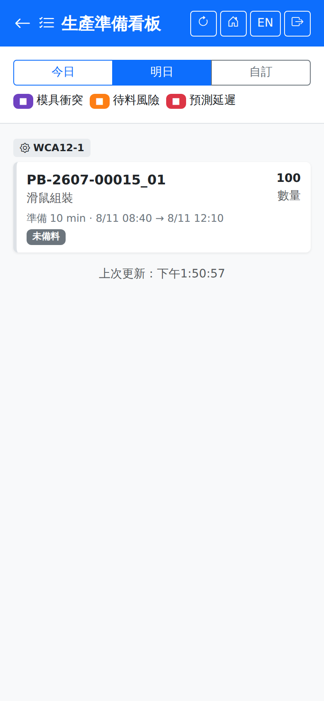

生產準備看板Preparation Board
以「哪一天要生產」為主軸，列出當天各工作中心要投產的派工與其備料狀況，供班前確認；本頁唯讀。Organised around the day production is planned, this board lists what each work center is due to run and whether the material is ready, for the pre-shift check. It is read-only.

選擇日期Choosing the day
上方三個按鈕切換日期，「明日」為預設值——這個看板是給「明天要開工前先把料備好」用的，所以預設不是今天。點「自訂」可挑任意日期。The three buttons at the top switch the day, and "Tomorrow" is the default — the board exists so that material for tomorrow is ready today, which is why it does not open on today. Tap "Custom" to pick any date.
卡片內容What is on a card
派工依工作中心分組，每張卡片顯示派工號、品名、數量、準備工時（分鐘）與計畫起訖時間，以及一個備料狀態徽章：Dispatches are grouped by work center. Each card shows the dispatch number, the product name, the quantity, the setup time in minutes and the planned start and finish, plus a staging status badge:
| 徽章Badge | 說明Guide |
|---|---|
| 已備料Staged | 用料已備妥，可以開工。The material is ready and work can start. |
| 備料中Staging | 備料單已開立，倉庫尚在揀料移倉。A staging order exists and the warehouse is still picking and moving the material. |
| 未備料Not Staged | 尚未開立備料單，需儘快處理，否則會影響開工。No staging order has been raised yet; deal with it promptly or the start will slip. |
圖例的三種顏色標示需要注意的派工：「模具衝突」代表同一副模具被排在重疊時段、「待料風險」代表用料可能不及、「預測延遲」代表推算會超過計畫完成時間。標「延續」的是前一天開工、跨到當天還在做的派工，不需要再準備。The three colours in the legend mark dispatches that need attention: "Tooling Conflict" means the same tool is scheduled for overlapping slots, "Material Risk" means the material may not arrive in time, and "Predicted Late" means it is projected to miss the planned finish time. Dispatches marked "Continued" started on an earlier day and are still running, so they need no preparation.